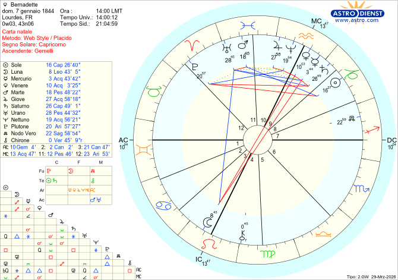

Biografie
Bernadette Soubirous
Lourdes, 7 gennaio 1844
Bernadette Soubirous nata a Lourdes il 07/01/1844 alle ore 14.00
Capricorno Ascendente Gemelli

Il Cielo di Bernadette Soubirous: Struttura Logica di un’Estasi
Il tema natale di Bernadette Soubirous rappresenta uno dei casi più affascinanti e controversi della storia religiosa moderna. Tra l'11 febbraio e il 16 luglio 1858, nella grotta di Massabielle presso Lourdes — nell'antica regione della Bigorre, oggi dipartimento francese degli Alti Pirenei — la giovane Bernadette fu protagonista di diciotto apparizioni della Vergine, concluse dall'«addio» del 16 luglio. La domanda che l'astrologia non può né vuole risolvere è se tali esperienze abbiano avuto un'origine soprannaturale o siano riconducibili a stati allucinatori. Ciò che invece la lettura del tema natale può offrire è un ritratto psicologico preciso della persona, permettendoci di valutare la coerenza tra la struttura caratteriale di Bernadette e il racconto che ella fece di tali esperienze.
Il Sole natale di Bernadette si trova nel segno del Capricorno, archetipo zodiacale per eccellenza del realismo, della concretezza e della disciplina interiore. Lungi dall'essere una personalità fantasiosa o incline alla dissociazione, il Capricornotende a costruire la propria esperienza del mondo su basi solide, razionali e verificabili. Questa disposizione di fondo è ulteriormente consolidata dalla presenza di Saturno nel medesimo segno: pur non formando una congiunzione stretta con il Sole — la distanza orbitale è di 9 gradi — il suoposizionamento nel domicilio d'elezione rafforza notevolmente la qualità saturnina della personalità, accentuandone il rigore, la sobrietà e la tendenza al controllo.
A completare questo quadro di strutturazione cognitiva interviene la congiunzione Mercurio-Saturno, che in psicologia astrologica è classicamente associata a un pensiero metodico, analitico e privo di derive visionarie. La mente di Bernadette, così come emerge dalla combinazione di questi fattori, appare orientata alla coerenza logica e alla lucidità piuttosto che all'evasione fantastica. Questa osservazione è di rilievo non trascurabile: il profilo psicologico non presenta alcun indicatore di struttura mentale distorta, né di tendenza alla mitomania o alla fabulazione patologica.
Un elemento di particolare interesse è la collocazione del Sole in Casa Ottava. In astrologia Morpurghiana, questa casa è associata al desiderio di sottrarsi allo sguardo altrui, di preservare la propria identità da esposizioni non desiderate. Chi ha il Sole in ottava non cerca la luce dei riflettori: tende piuttosto a ritrarsi, a custodire la propria essenza nell'ombra. Questo dato contraddice radicalmente l'ipotesi di chi ha attribuito le apparizioni a un desiderio di protagonismo da parte di Bernadette.
La configurazione si complica con la quadratura del Sole a Plutone in Ariete e in Casa Undicesima. L'Ariete è un segno che occupa naturalmente la scena. Non lo fa per deliberata ambizione, ma in virtù delle qualità che gli appartengono: un'esuberanza contagiosa, un coraggio istintivo, un'irrefrenabile spinta alla competizione. Plutone leso nel segno dell'Ariete, non indica tanto una sete di protagonismo, quanto piuttosto una carica aggressiva che richiede costante disciplina interiore. La Casa Undicesima, rappresentativa del collettivo e del sociale, non favorisce certo la proiezione individuale. Questo aspetto suggerisce piuttosto un protagonismo subìto, imposto dall'esterno contro la propria volontà — una lettura che la biografia di Bernadette conferma pienamente. Il suo desiderio più profondo era ritirarsi in un convento di clausura, lontana dagli occhi del mondo; fu invece costretta a subire per decenni interrogatoridi vescovi, prelati e curiosi, in una violazione sistematica di quella privacy che costituiva il suo bisogno esistenziale più autentico.
La Casa Seconda del tema — quella deputata alle risorse materiali e al rapporto con il possesso — si trova nel segno del Cancro, il cui dispositore è la Luna, collocata in Casa Terza in opposizione alla congiunzione Mercurio-Venere. Questa configurazione è di straordinaria eloquenza: farebbe pensare che tra i messaggi ricevuti, vi sia anche quello del comportamento da tenere in caso di offerte e doni da parte degli altri.
La storia conferma che Bernadette non accettò mai alcun dono materiale — né per sé né per la propria famiglia, nonostante versasse in condizioni di estrema indigenza. Episodi come il rifiuto di una mela o di un pezzo di pane, persino in stato di fame, rivelano una determinazione che va ben oltre il semplice pudore: si tratta di un'integrità radicale, coerente con il profilo astrologico. Giove, significatore del denaro, si trova nel segno dell'Acquario, per sua natura indifferente all'accumulo e ai beni terreni, confermando lo strutturale disinteresse di Bernadette verso la dimensione economica.
Il nucleo simbolicamente più denso del tema è senza dubbio l'opposizione tra la congiunzione Mercurio-Venere in Acquario (Casa Nona) e la Luna in Leone (Casa Terza). Questa configurazione merita una lettura attenta e stratificata.
L'asse terza-nona casa governa in astrologia la comunicazione, gli spostamenti, l'insegnamento e la trasmissione del sapere. Quando Mercurio — il messaggero degli dèi per antonomasia — si trova coinvolto in questo asse, il tema del messaggio ricevuto e da trasmettere diventa centrale nell'esperienza esistenziale del nativo. La collocazione di Mercurio nell'Acquario, segno che incarna il principio del collettivo e dell'universale, trasforma questo messaggio in qualcosa che non appartiene alla sfera privata: deve raggiungere l'umanità intera.
Il contenuto del messaggio è decifrato dalla congiunzione Mercurio-Venere: Venere, dea dell'amore e dell'armonia, unita al pianeta della comunicazione nella casa della fede e della religiosità (la Nona), configura inequivocabilmente un messaggio d'amore a carattere spirituale. «Pregate per la salvezza delle anime dei peccatori» — la frase attribuita alla Madonna da Bernadette — è la traduzione in linguaggio religioso di questo messaggio d’amore rivolto all' intera umanità.
Il polo opposto dell'asse è occupato dalla Luna in Leone in Casa Terza. In astrologia, la Luna è la Grande Madre, il principio femminile archetipico per eccellenza. Il Leone, segno solare e regale, le conferisce luminosità ed inoltre, la Luna in Leone, rappresenta perfettamente la Regina dei cieli. L' aspetto giovanile della Vergine Maria, è dovuto alla presenza della luna in terza casa. Bernadette insistette sempre nel descrivere l'apparizione come una «fanciulla giovane», luminosa e bellissima, nonostante lo sconcerto del clero abituato a rappresentazioni più austere e autorevoli della Vergine.
L'opposizione, configurazione astrologica tradizionalmente associata a tensione e conflittualità, non deve trarre in inganno. Lo zodiaco non è chiamato soltanto a descrivere la bellezza di un'esperienza, ma anche il suo peso psicologico e relazionale. L'incontro con la Madonna non fu per Bernadette soltanto una fonte di consolazione e piacere: fu anche l'origine di un compito che la sopraffaceva — comunicare ai sacerdoti che in quel luogo doveva sorgere un santuario — e di una serie inesausta di interrogatori, verifiche, pressioni e invasioni della sua intimità. L'opposizione registra fedelmente questa doppiezza: l'esperienza sublime da un lato, lo stress e la responsabilità dall'altro.
La straordinaria resistenza psicologica dimostrata da Bernadette nel corso degli interrogatori — la sua capacità di ripetere le stesse affermazioni con calma imperturbabile, senza mai contraddirsi e senza cedere ai tranelli retorici di interlocutori ben più istruiti di lei — trova la sua radice astrologica nel sestile tra il Sole in Capricorno e Marte in Pesci in Casa Undicesima. Marte nei Pesci non è un pianeta battagliero nel senso convenzionale del termine: non è aggressivo né baldanzoso. La sua energia è piuttosto quella della resistenza passiva, della tenaciainteriore, della capacità di sostenere uno sforzo prolungato per spirito di sacrificio, mentre l' undicesima casa, è la casa per eccellenza del tepore e della moderazione. Marte che forma un aspetto di sestile al Sole in Capricorno, descrive una volontà di acciaio mascherata da quiete apparente — esattamente ciò che i testimoni riportanonell'atteggiamento di Bernadette durante le deposizioni. Un altro tratto caratteriale che generò perplessità nel clero era il temperamento ironico, giocoso e infantile di Bernadette. Come avrebbe potuto la Madonna scegliere una ragazza di così scarsa levatura intellettuale, ignorante e di nessun rilievo sociale? La risposta di Bernadette — che la Madonna l'aveva scelta «perché non ne aveva trovata una più ignorante» — è emblematica di quella forma di umorismo disarmante che spesso nasconde una grande intelligenza emotiva. Non dimentichiamo inoltre che, l'Ascendente in Gemelli conferisce leggerezza, curiosità, duttilità comunicativa e un certo gusto per il gioco verbale.
La congiunzione Mercurio-Venere in opposizione alla Luna — con Mercurio e Venere in Casa Nona e la Luna in Casa Terza, sull'asse dell'apprendimento e dell'insegnamento — indica invece una difficoltà strutturale nell'assimilazione scolastica (la Luna come memoria è qui «afflitta» dalla presenza di pianeti opposti) e un blocco di tipo evolutivo che ha impedito a Bernadette di vivere pienamente la fase adolescenziale. La sua modalità relazionale con i coetanei era quella di una bambina tra i bambini, non di un'adolescente che assume ruoli di guida o di riferimento. Questo non è un segno di ritardo mentale, ma di una dissociazione tra l'età anagrafica e quella emotiva — un fenomeno ben noto in psicologia dello sviluppo, spesso associato a contesti di forte privazione materiale e affettiva.
La scelta di farsi suora, lungi dall'essere una fuga dal mondo, appare nel tema natale come una profonda necessità psichica e spirituale. Il tema di Bernadette è caratterizzato da una saturazione nettuniana che raramente si incontra con tale densità in un singolo oroscopo.
Quattro pianeti si trovano nel segno dell'Acquario — Mercurio, Venere, Nettuno e Giove — segno nel quale Nettuno è esaltato. Saturno, Mercurio e Venere si collocano in Casa Nona, la casa della spiritualità, della religione e della ricerca del senso trascendente — ed è la casa del domicilio base di Nettuno per cosignificanza con il Sagittario. Marte e Urano si trovano nei Pesci, il segno governato da Nettuno, in Casa Undicesima dove troviamo nuovamente l’ esaltazione di Nettuno per cosignificanza con l’aquario, ed inoltre è la casa del collettivo e della dissoluzione degli egoismi individuali.
Il culmine di questa configurazione è la congiunzione Nettuno-Giove, collocata in modo particolarmente significativo in Casa Decima — la casa della realizzazione sociale e della vocazione pubblica. Nettuno amplifica la dimensione spirituale e mistica; Giove espande e glorifica ciò che tocca. Questa congiunzione, in una posizione tanto prominente, indica che la realizzazione più alta di Bernadette non poteva che passare attraverso la vitareligiosa: non come rinuncia, ma come compimento. La sua santità — riconosciuta dalla Chiesa con la canonizzazione del 1933 — è scritta, in un certo senso, già nelle stelle del suo tema natale.
La lettura integrata del tema natale di Bernadette Soubirous restituisce il ritratto di una personalità tutt'altro che fragile o instabile: una donna dotata di una struttura psicologica solida, razionale, refrattaria alla fantasticheria e al protagonismo, animata da una profonda vita interiore e da un'integrità morale che la biografia storica non fa che confermare. Le configurazioni planetarie non possono attestare la natura soprannaturale delle apparizioni, ma possono attestare qualcosa di altrettanto prezioso: che la persona che le ha vissute e trasmesse era degna di fiducia, coerente nel suo racconto e integra nel suo comportamento.
L'astrologia Morpurghiana ci offre qui uno strumento di comprensione psicologica che dialoga con la storia senza pretendere di sostituirsi alla teologia o alla psicopatologia: ci dice, semplicemente, che Bernadette era esattamente la persona che disse di essere.